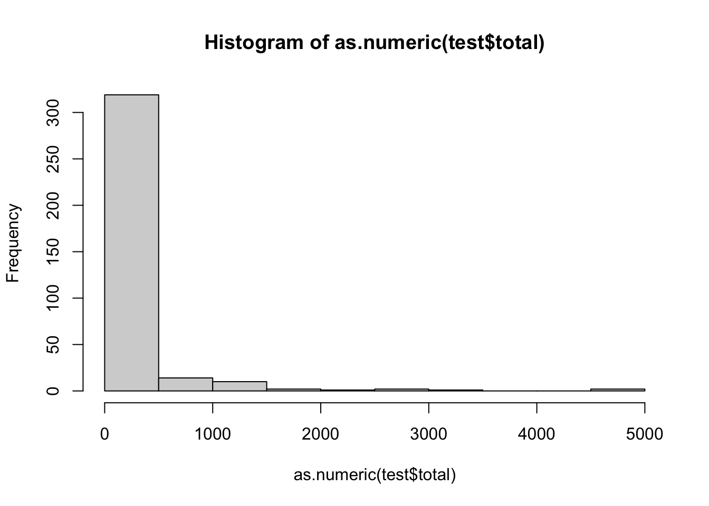
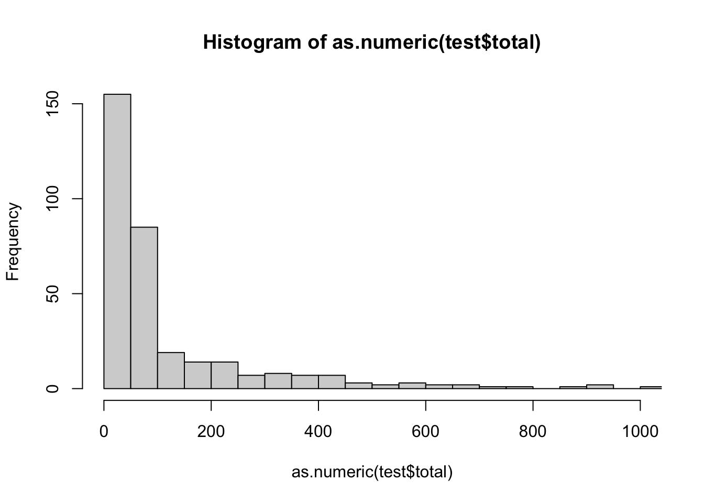

# Load dependencies
library(dplyr)
path_proposals <- "data/raw/proposals.csv"
path_votes <- "data/raw/proposals_votes.csv"
proposals <- read.csv(path_proposals)
proposals_votes <- read.csv(path_votes)Data
In this week, you will be using your laptops to work with a relatively big research dataset (Cámara-Menoyo 2026) to answer actual research questions that arose from a research project.
Session’s goals
- Familiarise with the dataset (and the process it represents)
- learn tidyverse’s syntax for frequent data manipulations:
filter()to subset rows matching some conditionsselect(), to subset columns (by name or position)group()andsummarise()to compute summaries based on some criteria- use join_by() to combine datasets
- learn when to apply these methods to address research questions
Slides
The data
The data consists of two `csv` files:
proposals.csv: containing all Approved, Rejected and Proposed tagging proposals from the OSM Wiki, as well as their associated metadata.proposals_votes.csv: containing all the votes cast for every tagging proposal inproposals.
Both files were generated using a dedicated R-package called {OSMproposals} (Cámara-Menoyo 2026) which provides reproducible datasets containing information about OpenStreetMap’s tagging proposals. It does so by querying and webscrapping OSM’s wiki via helper functions. Refer to the official documentation page: https://warwickcim.github.io/osmproposals/ to see metadata and the source code that generated each dataset.
WarningImportant considerations
- The provided datasets contain experimental versions of the actual datasets provided by the package, so documentation may slightly differ.
- These datasets are part of an ongoing research. Please, do not share them beyond the classroom unless with explicit permission from their authors.
Loading data
The data is provided by you in the data/ folder. We’ll load the two datasets and assign them, respectively, to the variables proposals and proposals_votes:
Exploring data
Some questions we may want to immediately answer to familiarise with the datasets are:
How big are these datasets?
What do they contain?
# See first 5 rows
head(proposals, 5) title
1 Proposal:Electricity
2 Proposal:Motorcycle friendly
3 Proposal:Tramtrack on highway
4 Proposal:Amenity=lounge
5 Proposal:Aquatics centre
fullurl status_raw
1 https://wiki.openstreetmap.org/wiki/Proposal:Electricity Rejected
2 https://wiki.openstreetmap.org/wiki/Proposal:Motorcycle_friendly Rejected
3 https://wiki.openstreetmap.org/wiki/Proposal:Tramtrack_on_highway Rejected
4 https://wiki.openstreetmap.org/wiki/Proposal:Amenity%3Dlounge Rejected
5 https://wiki.openstreetmap.org/wiki/Proposal:Aquatics_centre Rejected
status_simple sortkeyprefix
1 Completed "electricity"
2 Completed "tag motorcycle_friendly" for accommodations
3 Completed "Tramtrack on highway"
4 Completed Amenity=lounge
5 Completed Aquatics centre
timestamp touched length words
1 2022-03-15 02:38:02 2026-02-22 18:10:16 69307 34653.5
2 2022-03-14 20:31:57 2026-02-22 18:10:04 11731 5865.5
3 2022-03-15 03:40:16 2026-02-03 18:31:06 12500 6250.0
4 2024-10-30 16:40:54 2026-02-22 18:10:40 12681 6340.5
5 2022-03-14 15:18:12 2026-02-03 18:31:06 14296 7148.0
editurl
1 https://wiki.openstreetmap.org/w/index.php?title=Proposal:Electricity&action=edit
2 https://wiki.openstreetmap.org/w/index.php?title=Proposal:Motorcycle_friendly&action=edit
3 https://wiki.openstreetmap.org/w/index.php?title=Proposal:Tramtrack_on_highway&action=edit
4 https://wiki.openstreetmap.org/w/index.php?title=Proposal:Amenity%3Dlounge&action=edit
5 https://wiki.openstreetmap.org/w/index.php?title=Proposal:Aquatics_centre&action=edit
pageid page_creator year_creation date_of_page_creation latest_editor
1 205062 Privatemajory 2018 2018-09-03 15:51:00 TigerfellBot
2 177232 Rtfm 2017 2017-01-10 12:50:00 TigerfellBot
3 215012 Tolstoi21 2018 2018-11-01 11:48:00 Maro21
4 322252 Lega4 2024 2024-10-07 13:49:00 Lega4
5 154289 Math1985 2015 2015-12-25 19:42:00 TigerfellBot
date_of_latest_edit total_number_of_edits total_number_of_distinct_authors
1 2023-04-30 15:12:00 220 53
2 2023-04-30 16:55:00 65 27
3 2024-02-21 20:31:00 50 22
4 2024-10-30 16:40:00 27 14
5 2023-04-30 13:55:00 77 48
proposed_by n_creators tagging
1 Privatemajory, Luke 2 electricity=yes, no, intermittent
2 rtfm 1 motorcycle_friendly=yes / no / customary
3 Tolstoi21 1 railway=separately_mapped
4 Lega4 1 <NA>
5 Math1985 1 leisure=aquatics_centre
key_inferred value_inferred applies_to_node applies_to_way
1 electricity yes, no, intermittent NA NA
2 motorcycle_friendly yes / no / customary NA NA
3 railway separately_mapped NA TRUE
4 <NA> <NA> NA NA
5 leisure aquatics_centre NA NA
applies_to_area applies_to_relation
1 NA NA
2 NA NA
3 NA NA
4 NA NA
5 NA NA
definition
1 Indicate the electricity source used in a public building or amenity.
2 to mark hotels / campings a.s.o. in case they especially welcome bikers
3 There is a tramway track (railway=tram) on a highway=*, but the tramway is mapped as a separate way.
4 <NA>
5 A facility with swimming pools primarily used for water sports (including swimming lessons)
statistics rendered_as draft_started rfc_start vote_start vote_end
1 NA no rendering 2018-09-03 2020-10-15 2021-01-18 2021-02-01
2 NA <NA> 2017-01-10 2017-01-10 2017-03-05 2017-03-17
3 NA <NA> <NA> 2018-11-01 2018-11-19 2018-12-03
4 NA <NA> 2024-10-07 2024-10-07 2024-10-24 2024-10-30
5 NA <NA> 2015-12-25 2015-12-25 2016-01-01 2016-01-22
language classification
1 English 1
2 English 1
3 English 1
4 English 2
5 English 1# See last 5 rows
tail(proposals_votes, 5) url
8507 https://wiki.openstreetmap.org/wiki/Proposal:Virtual_tour
8508 https://wiki.openstreetmap.org/wiki/Proposal:Virtual_tour
8509 https://wiki.openstreetmap.org/wiki/Proposal:Walk_or_cycleway_construction
8510 https://wiki.openstreetmap.org/wiki/Proposal:Water_outlet
8511 https://wiki.openstreetmap.org/wiki/JA:Proposed_features/Tagging_for_complex_junctions_or_traffic_signals_that_are_named
votes_raw
8507 I have comments but abstain from voting on this proposal. Can we keep the wiki page exist for low-usage tags that don't pass the voting process? -- Rtnf (talk) 09:21, 21 November 2024 (UTC)
8508 I oppose this proposal. Soft no for now. I appreciate the concept, but I suspect the focus on website URLs is already too limiting, as discussed in on the talk page. – Minh Nguyễn 💬 18:28, 21 November 2024 (UTC)
8509 <NA>
8510 <NA>
8511 <NA>
vote user date_vote
8507 Abstain Rtnf 2024-11-21 09:21:00
8508 Oppose Minh Nguyễn 2024-11-21 18:28:00
8509 <NA> <NA> <NA>
8510 <NA> <NA> <NA>
8511 <NA> <NA> <NA>summary(proposals) title fullurl status_raw status_simple
Length :1983 Length :1983 Length :1983 Length :1983
N.unique :1983 N.unique :1983 N.unique : 9 N.unique : 3
N.blank : 0 N.blank : 0 N.blank : 0 N.blank : 0
Min.nchar: 12 Min.nchar: 48 Min.nchar: 5 Min.nchar: 6
Max.nchar: 114 Max.nchar: 150 Max.nchar: 9 Max.nchar: 9
sortkeyprefix timestamp touched length
Length :1983 Length :1983 Length :1983 Min. : 153
N.unique :1934 N.unique :1953 N.unique : 103 1st Qu.: 1678
N.blank : 6 N.blank : 0 N.blank : 0 Median : 3779
Min.nchar: 0 Min.nchar: 19 Min.nchar: 19 Mean : 6681
Max.nchar: 171 Max.nchar: 19 Max.nchar: 19 3rd Qu.: 8198
Max. :127892
words editurl pageid page_creator
Min. : 76.5 Length :1983 Min. : 2016 Length :1983
1st Qu.: 839.0 N.unique :1983 1st Qu.: 50770 N.unique : 923
Median : 1889.5 N.blank : 0 Median :146840 N.blank : 0
Mean : 3340.3 Min.nchar: 73 Mean :158913 Min.nchar: 2
3rd Qu.: 4099.0 Max.nchar: 175 3rd Qu.:264740 Max.nchar: 21
Max. :63946.0 Max. :339679 NAs : 1
year_creation date_of_page_creation latest_editor date_of_latest_edit
Min. :2006 Length :1983 Length :1983 Length :1983
1st Qu.:2010 N.unique :1978 N.unique : 214 N.unique : 998
Median :2015 N.blank : 0 N.blank : 0 N.blank : 0
Mean :2015 Min.nchar: 10 Min.nchar: 3 Min.nchar: 19
3rd Qu.:2021 Max.nchar: 19 Max.nchar: 19 Max.nchar: 19
Max. :2026 NAs : 1 NAs : 1 NAs : 1
NAs :1
total_number_of_edits total_number_of_distinct_authors proposed_by
Min. : 1.00 Min. : 1.00 Length :1983
1st Qu.: 8.00 1st Qu.: 3.00 N.unique : 941
Median : 17.00 Median : 6.00 N.blank : 0
Mean : 33.69 Mean : 11.64 Min.nchar: 1
3rd Qu.: 43.00 3rd Qu.: 17.00 Max.nchar: 146
Max. :775.00 Max. :159.00 NAs : 160
NAs :1 NAs :1
n_creators tagging key_inferred value_inferred
Min. :1.000 Length :1983 Length :1983 Length :1983
1st Qu.:1.000 N.unique :1582 N.unique : 741 N.unique :1101
Median :1.000 N.blank : 3 N.blank : 0 N.blank : 0
Mean :1.023 Min.nchar: 0 Min.nchar: 1 Min.nchar: 1
3rd Qu.:1.000 Max.nchar: 398 Max.nchar: 93 Max.nchar: 360
Max. :4.000 NAs : 315 NAs : 322 NAs : 322
applies_to_node applies_to_way applies_to_area applies_to_relation
Mode:logical Mode:logical Mode:logical Mode:logical
TRUE:371 TRUE:190 TRUE:272 TRUE:91
NAs :1612 NAs :1793 NAs :1711 NAs :1892
definition statistics rendered_as draft_started
Length :1983 Mode:logical Length :1983 Length :1983
N.unique :1450 NAs :1983 N.unique : 489 N.unique :1256
N.blank : 1 N.blank : 50 N.blank : 0
Min.nchar: 0 Min.nchar: 0 Min.nchar: 10
Max.nchar: 642 Max.nchar: 374 Max.nchar: 10
NAs : 485 NAs :1196 NAs : 479
rfc_start vote_start vote_end language
Length :1983 Length :1983 Length :1983 Length :1983
N.unique : 795 N.unique : 444 N.unique : 432 N.unique : 13
N.blank : 0 N.blank : 0 N.blank : 0 N.blank : 0
Min.nchar: 10 Min.nchar: 10 Min.nchar: 10 Min.nchar: 5
Max.nchar: 10 Max.nchar: 10 Max.nchar: 10 Max.nchar: 23
NAs :1049 NAs :1482 NAs :1480 NAs : 254
classification
Min. :1.000
1st Qu.:2.000
Median :2.000
Mean :1.855
3rd Qu.:2.000
Max. :3.000
A sense of the structure
str(proposals)'data.frame': 1983 obs. of 36 variables:
$ title : chr "Proposal:Electricity" "Proposal:Motorcycle friendly" "Proposal:Tramtrack on highway" "Proposal:Amenity=lounge" ...
$ fullurl : chr "https://wiki.openstreetmap.org/wiki/Proposal:Electricity" "https://wiki.openstreetmap.org/wiki/Proposal:Motorcycle_friendly" "https://wiki.openstreetmap.org/wiki/Proposal:Tramtrack_on_highway" "https://wiki.openstreetmap.org/wiki/Proposal:Amenity%3Dlounge" ...
$ status_raw : chr "Rejected" "Rejected" "Rejected" "Rejected" ...
$ status_simple : chr "Completed" "Completed" "Completed" "Completed" ...
$ sortkeyprefix : chr "\"electricity\"" "\"tag motorcycle_friendly\" for accommodations" "\"Tramtrack on highway\"" "Amenity=lounge" ...
$ timestamp : chr "2022-03-15 02:38:02" "2022-03-14 20:31:57" "2022-03-15 03:40:16" "2024-10-30 16:40:54" ...
$ touched : chr "2026-02-22 18:10:16" "2026-02-22 18:10:04" "2026-02-03 18:31:06" "2026-02-22 18:10:40" ...
$ length : int 69307 11731 12500 12681 14296 11626 10446 6864 7169 27041 ...
$ words : num 34654 5866 6250 6340 7148 ...
$ editurl : chr "https://wiki.openstreetmap.org/w/index.php?title=Proposal:Electricity&action=edit" "https://wiki.openstreetmap.org/w/index.php?title=Proposal:Motorcycle_friendly&action=edit" "https://wiki.openstreetmap.org/w/index.php?title=Proposal:Tramtrack_on_highway&action=edit" "https://wiki.openstreetmap.org/w/index.php?title=Proposal:Amenity%3Dlounge&action=edit" ...
$ pageid : int 205062 177232 215012 322252 154289 272062 266281 157733 95070 235724 ...
$ page_creator : chr "Privatemajory" "Rtfm" "Tolstoi21" "Lega4" ...
$ year_creation : int 2018 2017 2018 2024 2015 2021 2021 2016 2012 2019 ...
$ date_of_page_creation : chr "2018-09-03 15:51:00" "2017-01-10 12:50:00" "2018-11-01 11:48:00" "2024-10-07 13:49:00" ...
$ latest_editor : chr "TigerfellBot" "TigerfellBot" "Maro21" "Lega4" ...
$ date_of_latest_edit : chr "2023-04-30 15:12:00" "2023-04-30 16:55:00" "2024-02-21 20:31:00" "2024-10-30 16:40:00" ...
$ total_number_of_edits : int 220 65 50 27 77 50 35 33 27 64 ...
$ total_number_of_distinct_authors: int 53 27 22 14 48 18 10 21 17 20 ...
$ proposed_by : chr "Privatemajory, Luke" "rtfm" "Tolstoi21" "Lega4" ...
$ n_creators : int 2 1 1 1 1 1 1 1 1 1 ...
$ tagging : chr "electricity=yes, no, intermittent" "motorcycle_friendly=yes / no / customary" "railway=separately_mapped" NA ...
$ key_inferred : chr "electricity" "motorcycle_friendly" "railway" NA ...
$ value_inferred : chr "yes, no, intermittent" "yes / no / customary" "separately_mapped" NA ...
$ applies_to_node : logi NA NA NA NA NA TRUE ...
$ applies_to_way : logi NA NA TRUE NA NA NA ...
$ applies_to_area : logi NA NA NA NA NA TRUE ...
$ applies_to_relation : logi NA NA NA NA NA NA ...
$ definition : chr "Indicate the electricity source used in a public building or amenity." "to mark hotels / campings a.s.o. in case they especially welcome bikers" "There is a tramway track (railway=tram) on a highway=*, but the tramway is mapped as a separate way." NA ...
$ statistics : logi NA NA NA NA NA NA ...
$ rendered_as : chr "no rendering" NA NA NA ...
$ draft_started : chr "2018-09-03" "2017-01-10" NA "2024-10-07" ...
$ rfc_start : chr "2020-10-15" "2017-01-10" "2018-11-01" "2024-10-07" ...
$ vote_start : chr "2021-01-18" "2017-03-05" "2018-11-19" "2024-10-24" ...
$ vote_end : chr "2021-02-01" "2017-03-17" "2018-12-03" "2024-10-30" ...
$ language : chr "English" "English" "English" "English" ...
$ classification : int 1 1 1 2 1 1 3 2 2 2 ...str(proposals_votes)'data.frame': 8511 obs. of 5 variables:
$ url : chr "https://wiki.openstreetmap.org/wiki/Proposal:Electricity" "https://wiki.openstreetmap.org/wiki/Proposal:Electricity" "https://wiki.openstreetmap.org/wiki/Proposal:Electricity" "https://wiki.openstreetmap.org/wiki/Proposal:Electricity" ...
$ votes_raw: chr "I approve this proposal. - Luke (talk) 19:21, 18 January 2021 (UTC)" "I approve this proposal. Well thought-out proposal -- would very much like to see this accepted --Gausserrorfun"| __truncated__ "I approve this proposal. --Dr Centerline (talk) 20:52, 18 January 2021 (UTC)" "I oppose this proposal. as this encourages pointless electricity=yes spam in places where everything has electr"| __truncated__ ...
$ vote : chr "Approve" "Approve" "Approve" "Oppose" ...
$ user : chr "Luke" "Gausserrorfunction" "Dr Centerline" NA ...
$ date_vote: chr "2021-01-18 19:21:00" "2021-01-18 19:34:00" "2021-01-18 20:52:00" NA ...dplyr` offers the function glimpse`:
glimpse(proposals)Rows: 1,983
Columns: 36
$ title <chr> "Proposal:Electricity", "Proposal:Mot…
$ fullurl <chr> "https://wiki.openstreetmap.org/wiki/…
$ status_raw <chr> "Rejected", "Rejected", "Rejected", "…
$ status_simple <chr> "Completed", "Completed", "Completed"…
$ sortkeyprefix <chr> "\"electricity\"", "\"tag motorcycle_…
$ timestamp <chr> "2022-03-15 02:38:02", "2022-03-14 20…
$ touched <chr> "2026-02-22 18:10:16", "2026-02-22 18…
$ length <int> 69307, 11731, 12500, 12681, 14296, 11…
$ words <dbl> 34653.5, 5865.5, 6250.0, 6340.5, 7148…
$ editurl <chr> "https://wiki.openstreetmap.org/w/ind…
$ pageid <int> 205062, 177232, 215012, 322252, 15428…
$ page_creator <chr> "Privatemajory", "Rtfm", "Tolstoi21",…
$ year_creation <int> 2018, 2017, 2018, 2024, 2015, 2021, 2…
$ date_of_page_creation <chr> "2018-09-03 15:51:00", "2017-01-10 12…
$ latest_editor <chr> "TigerfellBot", "TigerfellBot", "Maro…
$ date_of_latest_edit <chr> "2023-04-30 15:12:00", "2023-04-30 16…
$ total_number_of_edits <int> 220, 65, 50, 27, 77, 50, 35, 33, 27, …
$ total_number_of_distinct_authors <int> 53, 27, 22, 14, 48, 18, 10, 21, 17, 2…
$ proposed_by <chr> "Privatemajory, Luke", "rtfm", "Tolst…
$ n_creators <int> 2, 1, 1, 1, 1, 1, 1, 1, 1, 1, 1, 1, 1…
$ tagging <chr> "electricity=yes, no, intermittent", …
$ key_inferred <chr> "electricity", "motorcycle_friendly",…
$ value_inferred <chr> "yes, no, intermittent", "yes / no / …
$ applies_to_node <lgl> NA, NA, NA, NA, NA, TRUE, TRUE, NA, N…
$ applies_to_way <lgl> NA, NA, TRUE, NA, NA, NA, NA, NA, NA,…
$ applies_to_area <lgl> NA, NA, NA, NA, NA, TRUE, NA, NA, NA,…
$ applies_to_relation <lgl> NA, NA, NA, NA, NA, NA, NA, NA, NA, T…
$ definition <chr> "Indicate the electricity source used…
$ statistics <lgl> NA, NA, NA, NA, NA, NA, NA, NA, NA, N…
$ rendered_as <chr> "no rendering", NA, NA, NA, NA, "yes"…
$ draft_started <chr> "2018-09-03", "2017-01-10", NA, "2024…
$ rfc_start <chr> "2020-10-15", "2017-01-10", "2018-11-…
$ vote_start <chr> "2021-01-18", "2017-03-05", "2018-11-…
$ vote_end <chr> "2021-02-01", "2017-03-17", "2018-12-…
$ language <chr> "English", "English", "English", "Eng…
$ classification <int> 1, 1, 1, 2, 1, 1, 3, 2, 2, 2, 2, 2, 2…Another approach:
skimr::skim(proposals)| Name | proposals |
| Number of rows | 1983 |
| Number of columns | 36 |
| _______________________ | |
| Column type frequency: | |
| character | 23 |
| logical | 5 |
| numeric | 8 |
| ________________________ | |
| Group variables | None |
Variable type: character
| skim_variable | n_missing | complete_rate | min | max | empty | n_unique | whitespace |
|---|---|---|---|---|---|---|---|
| title | 0 | 1.00 | 12 | 114 | 0 | 1983 | 0 |
| fullurl | 0 | 1.00 | 48 | 150 | 0 | 1983 | 0 |
| status_raw | 0 | 1.00 | 5 | 9 | 0 | 9 | 0 |
| status_simple | 0 | 1.00 | 6 | 9 | 0 | 3 | 0 |
| sortkeyprefix | 0 | 1.00 | 0 | 171 | 6 | 1934 | 0 |
| timestamp | 0 | 1.00 | 19 | 19 | 0 | 1953 | 0 |
| touched | 0 | 1.00 | 19 | 19 | 0 | 103 | 0 |
| editurl | 0 | 1.00 | 73 | 175 | 0 | 1983 | 0 |
| page_creator | 1 | 1.00 | 2 | 21 | 0 | 923 | 0 |
| date_of_page_creation | 1 | 1.00 | 10 | 19 | 0 | 1978 | 0 |
| latest_editor | 1 | 1.00 | 3 | 19 | 0 | 214 | 0 |
| date_of_latest_edit | 1 | 1.00 | 19 | 19 | 0 | 998 | 0 |
| proposed_by | 160 | 0.92 | 1 | 146 | 0 | 941 | 0 |
| tagging | 315 | 0.84 | 0 | 398 | 3 | 1582 | 0 |
| key_inferred | 322 | 0.84 | 1 | 93 | 0 | 741 | 0 |
| value_inferred | 322 | 0.84 | 1 | 360 | 0 | 1101 | 0 |
| definition | 485 | 0.76 | 0 | 642 | 1 | 1450 | 0 |
| rendered_as | 1196 | 0.40 | 0 | 374 | 50 | 489 | 0 |
| draft_started | 479 | 0.76 | 10 | 10 | 0 | 1256 | 0 |
| rfc_start | 1049 | 0.47 | 10 | 10 | 0 | 795 | 0 |
| vote_start | 1482 | 0.25 | 10 | 10 | 0 | 444 | 0 |
| vote_end | 1480 | 0.25 | 10 | 10 | 0 | 432 | 0 |
| language | 254 | 0.87 | 5 | 23 | 0 | 13 | 0 |
Variable type: logical
| skim_variable | n_missing | complete_rate | mean | count |
|---|---|---|---|---|
| applies_to_node | 1612 | 0.19 | 1 | TRU: 371 |
| applies_to_way | 1793 | 0.10 | 1 | TRU: 190 |
| applies_to_area | 1711 | 0.14 | 1 | TRU: 272 |
| applies_to_relation | 1892 | 0.05 | 1 | TRU: 91 |
| statistics | 1983 | 0.00 | NaN | : |
Variable type: numeric
| skim_variable | n_missing | complete_rate | mean | sd | p0 | p25 | p50 | p75 | p100 | hist |
|---|---|---|---|---|---|---|---|---|---|---|
| length | 0 | 1 | 6680.62 | 9251.34 | 153.0 | 1678 | 3779.0 | 8198.0 | 127892 | ▇▁▁▁▁ |
| words | 0 | 1 | 3340.31 | 4625.67 | 76.5 | 839 | 1889.5 | 4099.0 | 63946 | ▇▁▁▁▁ |
| pageid | 0 | 1 | 158913.25 | 111132.93 | 2016.0 | 50770 | 146840.0 | 264740.5 | 339679 | ▇▅▃▅▆ |
| year_creation | 1 | 1 | 2015.34 | 5.94 | 2006.0 | 2010 | 2015.0 | 2021.0 | 2026 | ▇▅▃▆▃ |
| total_number_of_edits | 1 | 1 | 33.69 | 47.19 | 1.0 | 8 | 17.0 | 43.0 | 775 | ▇▁▁▁▁ |
| total_number_of_distinct_authors | 1 | 1 | 11.64 | 13.94 | 1.0 | 3 | 6.0 | 17.0 | 159 | ▇▁▁▁▁ |
| n_creators | 0 | 1 | 1.02 | 0.19 | 1.0 | 1 | 1.0 | 1.0 | 4 | ▇▁▁▁▁ |
| classification | 0 | 1 | 1.85 | 0.53 | 1.0 | 2 | 2.0 | 2.0 | 3 | ▂▁▇▁▁ |
CautionIs this big data?
Descriptive statistics
What’s the outcome
proposals |>
count(status_raw, sort = TRUE) status_raw n
1 Abandoned 473
2 Draft 445
3 Approved 407
4 Rejected 149
5 Proposed 144
6 Inactive 142
7 Obsoleted 137
8 Canceled 84
9 Voting 2summary(as.factor(proposals$status_raw))Abandoned Approved Canceled Draft Inactive Obsoleted Proposed Rejected
473 407 84 445 142 137 144 149
Voting
2 How many languages are used?
proposals |>
count(language) language n
1 Basque 2
2 Chichewa; Chewa; Nyanja 1
3 Chinese 1
4 Dutch; Flemish 1
5 English 1713
6 Estonian 1
7 French 2
8 Galician 1
9 Italian 1
10 Malay 1
11 Norwegian 1
12 Portuguese 3
13 Russian 1
14 <NA> 254How long does it take to finish a proposal?
test <- proposals |>
select(fullurl, status_simple, draft_started, rfc_start, vote_start, vote_end) |>
filter(status_simple == "Completed") |>
mutate(
draft_started = as.Date(draft_started),
vote_end = as.Date(vote_end),
total = vote_end - draft_started
) |>
# Remove negative values
filter(total > 0)
head(test) fullurl
1 https://wiki.openstreetmap.org/wiki/Proposal:Electricity
2 https://wiki.openstreetmap.org/wiki/Proposal:Motorcycle_friendly
3 https://wiki.openstreetmap.org/wiki/Proposal:Amenity%3Dlounge
4 https://wiki.openstreetmap.org/wiki/Proposal:Aquatics_centre
5 https://wiki.openstreetmap.org/wiki/Proposal:Artwork_type%3Dmaypole
6 https://wiki.openstreetmap.org/wiki/Proposal:Artwork_subject%3Dsheela-na-gig
status_simple draft_started rfc_start vote_start vote_end total
1 Completed 2018-09-03 2020-10-15 2021-01-18 2021-02-01 882 days
2 Completed 2017-01-10 2017-01-10 2017-03-05 2017-03-17 66 days
3 Completed 2024-10-07 2024-10-07 2024-10-24 2024-10-30 23 days
4 Completed 2015-12-25 2015-12-25 2016-01-01 2016-01-22 28 days
5 Completed 2021-10-20 2021-10-21 2021-11-08 2021-11-22 33 days
6 Completed 2022-03-07 2022-03-08 2022-03-22 2022-04-05 29 dayssummary(test$total)Time differences in days
Min. 1st Qu. Median Mean 3rd Qu. Max.
14.0 36.0 57.0 218.0 167.5 4869.0 hist(as.numeric(test$total))
hist(as.numeric(test$total), breaks = 100, xlim = c(0, 1000))
Are there any other metrics to quantify labour needed?
Further questions
Which are the most controversial proposals?
Are there different patterns based on the provided classification?
Which variables would you use to create your own classification for the proposals? Did you spot any differences between groups?
Combining datasets
votes_count <- proposals_votes |>
filter(!is.na(vote)) |>
count(url, vote) |>
tidyr::pivot_wider(names_from = vote, values_from = n) |>
mutate(votes_total = rowSums(across(c(Approve, Oppose, Abstain, Other)), na.rm = TRUE)) |>
rename(
votes_approve = Approve,
votes_oppose = Oppose,
votes_abstain = Abstain,
votes_other = Other
)
proposals <- proposals |>
# Incorporate votes
left_join(votes_count, by = join_by(fullurl == url))Readings
Cámara-Menoyo, Carlos. 2026. OSMpRoposals: Reproducible Datasets about OpenStreetMap’s Tagging Proposals. https://warwickcim.github.io/osmproposals/.